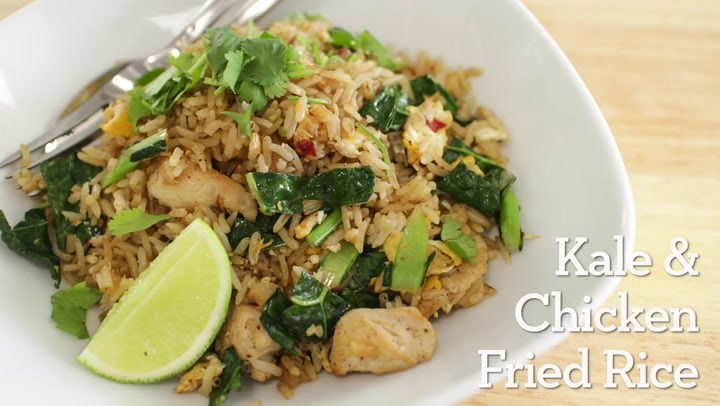

Fried Rice

Description
An authentic thai recipe for fried rice with egg, kale and chicken.
Ingredients
- 150g chicken
- 1 tsp Golden Mountain Sauce or soy sauce
- 0.5 tsp sugar
- 3-4 cloves garlic
- 1 small onion
- 2 leaves kale
- 2 eggs
- 350g cooked jasmine rice
Steps
- Combine chicken with Golden Mountain Sauce and sugar; set aside.
- Add marinated chicken to a pan and cook until done; set aside.
- Add vegetables to the same pan and cook for a few minutes.
- Add eggs, break the yolks, and let the egg set about half way then scramble briefly
- Add rice and toss briefly, breaking up big lumps with the back of your spatula.